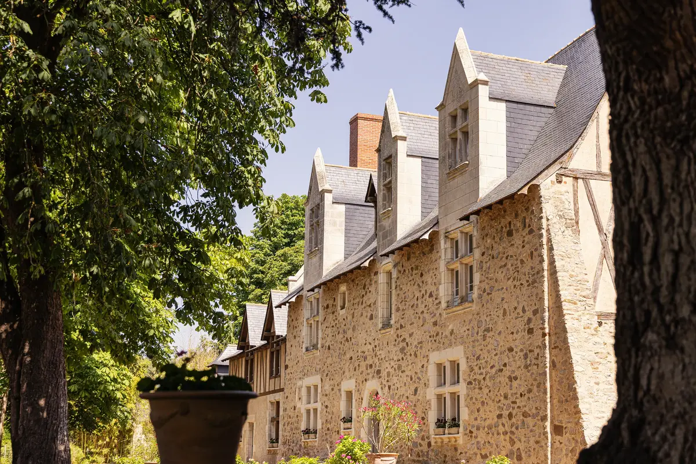
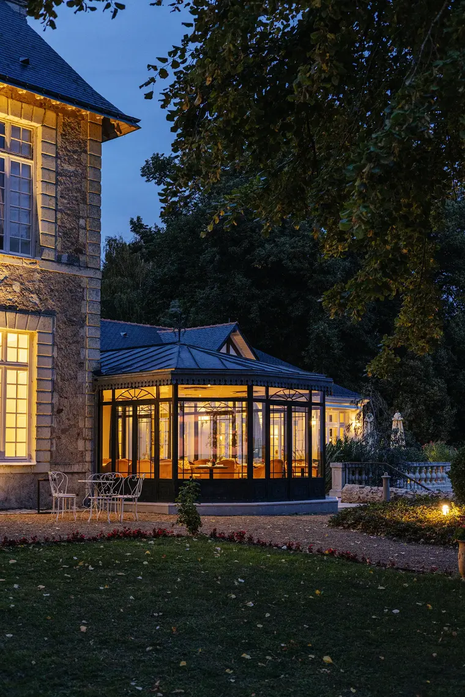

Château de Noirieux
À deux pas du Val de Loire, classé au patrimoine mondial de l'UNESCO, une demeure de pierre et d'ardoise au cœur d'un parc de 9 hectares : promenades, labyrinthe, animaux du domaine, piscine chauffée, et une verrière qui s'allume à la nuit tombée.
- 4 étoiles
- Hôtel
- 9
- Hectares de parc
- 19
- Chambres & suites
